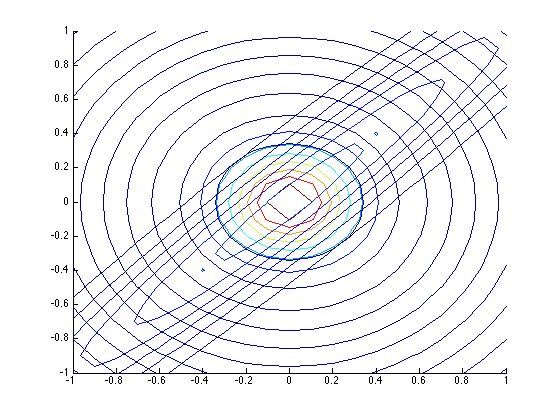

Plot KL(p,q) and KL(q,p) for 2d Gaussian
mu = [0,0];
Sigma = [1,0.97;0.97,1];
SigmaKLa = eye(2)/25;
SigmaKLb = eye(2);
x1 = [-1:0.1:1]';
x2 = x1;
n1 = length(x1);
n2 = length(x2);
f = zeros(n1,n2);
klqp = f;
klpq = f;
for i=1:n1
f(i,:) = mvnpdf([repmat(x1(i),n2,1),x2],mu,Sigma);
klqp(i,:) = mvnpdf([repmat(x1(i),n2,1),x2],mu, SigmaKLa );
klpq(i,:) = mvnpdf([repmat(x1(i),n2,1),x2],mu,SigmaKLb);
end
hold on;
contour(x1,x2,f);
contour(x1,x2,klqp);
hold off;
hold on;
contour(x1,x2,f);
contour(x1,x2,klpq);
hold off;
